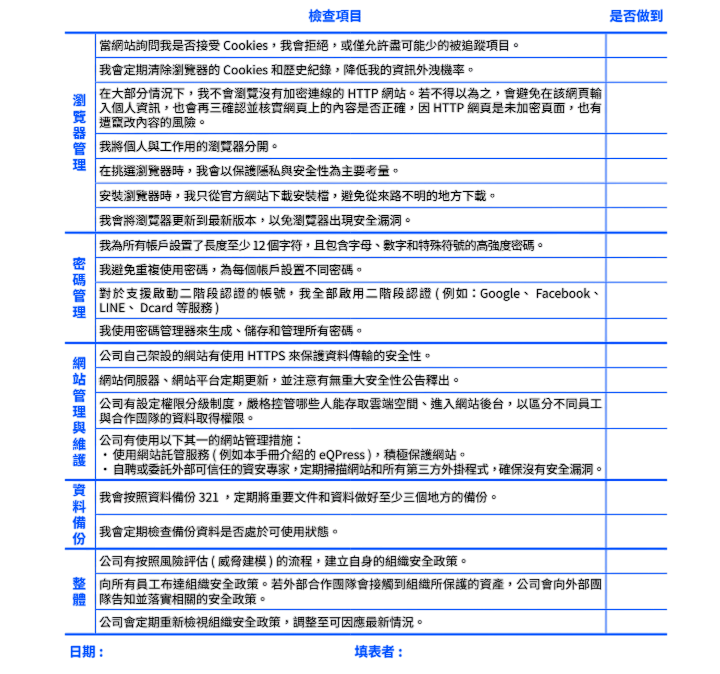

後測
-
借鑑小明和組織 A 的案例，希望你已經和小明一樣，充分了解在工作與生活中應如何落實良好的數位安全習慣。為了不再重蹈覆轍，四個章節之後，捲軸尾端赫然出現了一個整理清單，我們邀請你和小明一起點入後測問卷定期以此檢視自身與組織落實了哪些項目。最後，小明謹記著神明臨行前的一句忠告，建立良好的數位安全習慣並非一蹴可幾，所以要持續努力，就算無法第一次就全部做到，記得還是要定期檢視，逐漸改善喔！

危機來了，怎麼辦？
-
數位安全防禦是預防威脅發生，但當數位攻擊真的發生時若不知所措，反而功虧一簣。透過閱讀前面幾章理解了這麼多風險及應對方式後，現在的你已有足夠的基礎資安知識和防禦工具。然而，當在數位攻擊發生時的那一刻，該如何在第一時間應對止損，保護自己關心的人、物和使命呢？
答案是──你需要建立一套「緊急因應機制」。
「啊！又要建立緊急因應『機制』，太累、太麻煩了吧！」你是不是冒出這樣的念頭呢？
雖然「緊急因應機制」聽起來厚重又複雜，但形式上只是一份短短的文字檔（電子或其他方式），記載相關資訊、施行步驟，它將是你面對緊急狀況時的指引，幫助你快速反應。下面我們分成三個面向：準則、制定緊急因應計畫、資安求助資源，幫助你建置「緊急因應機制」。
- 準則：
- 制定緊急因應計畫：
- 如果帳號或網站遭到駭客攻擊，我們該怎麼辦？
- 如果有人點擊網路釣魚電子郵件或他的裝置行為可疑（例如半夜上傳資料出去或下載一大堆東西），我們該怎麼辦？
- 如果組織的電子郵件或最機敏的檔案被盜或洩露，我們該怎麼辦？
- 如果組織成員面臨人身安全危險或被逮捕，我們該怎麼辦？
- 組織成員因此人身安全危險或被逮補類型的威脅而產生壓力和焦慮時，我們該怎麼辦？
- 如果組織辦公室因自然災害而受損，我們該怎麼辦？
- 如果組織成員的電腦或電話等裝置遺失或被盜，我們該怎麼辦？
- 資安求助資源：
- 資安培訓：
- 設備健檢：
- 資安事件諮詢：
面對數位攻擊時，即使感到恐懼，也必須把握「主動回報」、「安全至上」這兩個準則。「主動回報」數位攻擊的狀況，除了能讓組織全體能及早發現、介入之外，更能確保組織及員工的福祉。同時，以同理心看待資安狀況造成的損失（如手機遭竊、使用網站遭受釣魚攻擊、社交帳號被駭等），避免組織或個人因擔心報復或究責，反而隱瞞受損狀況。更重要的是，透過獎勵帶動「安全至上」風氣，從根本打造注重資訊安全的文化。
制定緊急因應計畫是為了應對危機時能有所「行動」，而如同風險評估會因組織、個人而異，緊急因應計畫也需要綜合自身狀況和資源以客製化。畢竟，不同規模的機構所能處理危機的資源不同，不同性質的組織所遭受的數位攻擊和頻率大相逕庭。個人與組織都有能力規畫、制定因應計畫，因為自己就是行動的主體。當然！若有資安專家把關，這份計畫會更完善。
若你不知道從何開始，以下是幾個最常見的資安緊急狀況，先從以下幾個問題開始構思緊急因應措施吧！在此要先提醒，發生資安事件，我們需要可能不只是技術、資安專家，更可能需要法律專業、警察、心理諮商、其他公民團體等資源來修復資安攻擊導致的傷害。
透過這些提問，相信你腦海已經浮現一份資源聯絡清單和一些作法了！將這些資訊寫入「緊急因應」機制文件檔時，須確保這些資源都是「可聯絡的」，並且依序列出求救的聯繫流程。經過幾次演練（或真的使用！）和排除執行障礙，並搭配定期的檢核與操演，如此一來，有效的資訊安全因應機制就成形了。
資安攻擊所導致的傷害，除了在線上發生，有時也會延續到線下。若攻擊發生的當下，直接威脅到個人生命和資產安全，務必以生命安全為最高保全概念，其次才是資產。在台灣，若在地的警局、醫院都還是值得信賴的情況下，撥打 119（醫療救護專線）或 110（警察專線）來獲得第一時間保護為最佳。記得事先備妥醫療、人身安全的資源清單，且讓組織內的其他人都知道放在哪裡。 若就數位空間內的受損，如帳號遭駭、資料竊取、網路斷網、網站侵占等，雖說人身安全當下沒有可見危機，但仍須立即向資安專家求援，以確認到底是什麼攻擊、如何止損、後續如何因應及防禦，以確保傷害不會進一步擴大，甚至威脅現實生活中的人身及資產安全。 國際上，應對緊急資安狀況有 AccessNow 的 Helpline 資安專線 提供全球 24 小時的緊急因應服務。他們提供多語服務，但目前沒有中文，台灣人若求助，仍以英文通報為主。在台灣，我們推薦求助者直接與 Civil Society Cyber Shield （CSCS） 聯繫。CSCS 這個資安社群以「扮演科技人士和公民社會的橋樑，提升公民團體使用資訊科技的安全」為目標，由一群資訊和資安背景的志願者組成，透過官方聯絡信箱 contact@cscs.asia，可向他們尋求以下協助：
培訓組織人員資安知識，包含基礎概念、網路原理、電腦安全、手機安全、線上帳號安全等等。亦可依不同團體實際需要提供客製化的進階主題，例如 CSCS 曾設計並提供「駭客網路監控技術的實際演示」。建議培訓與健檢要一起執行，否則成效有限。
講師帶領組織人員檢視電腦、手機、組織公用設備（WiFi 基地台、印表機、網路硬碟等）的安全性設定，並給予調整建議及教學。
提供緊急或非緊急事件處理的建議，例如網站被入侵、帳號盜用等等。但不提供維運管理的服務，這需要由組織自行處理或是聘僱專業的外包廠商負責。
CSCS 是志願者團體，其回覆依照緊急程度，將在 1～2 週內回應。若你有更緊急或是其他更多想尋求協助的事項，請直接與本書作者──開放文化基金會（hi@ocf.tw）聯繫，以銜接求助者與更多可用資源的窗口。